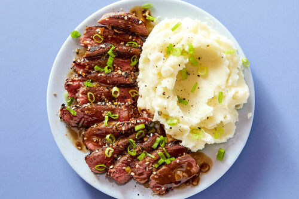

Steak and Mashed Potatoes

Description
Indulge in a classic and comforting meal with tender, juicy steak paired with creamy mashed potatoes.
Our recipe for perfectly cooked steak with a golden crust on the outside and a juicy pink center will leave your taste buds wanting more.
Served alongside smooth, buttery mashed potatoes, this meal is the ultimate comfort food that will satisfy any craving.
This easy-to-follow recipe is sure to become a staple in your kitchen for any occasion.
Ingredients
For the steak:
- 2 8-ounce (226 g) ribeye steaks
- Salt and pepper
- 2 tablespoons (30 ml) olive oil
- 2 tablespoons (28 g) butter
- 4 sprigs fresh thyme
- 3 cloves garlic, smashed
For the mashed potatoes:
- 2 pounds (907 g) russet potatoes, peeled and chopped
- 1/2 cup (113 g) unsalted butter, softened
- 1/2 cup (120 ml) whole milk
- Salt and pepper, to taste
- Chopped fresh parsley or chives (optional, for garnish)
Steps
For the steak:
-
Season the steaks generously on both sides with salt and pepper.
-
Heat the olive oil in a large skillet over high heat until hot and shimmering.
-
Add the steaks to the skillet and cook for 3-4 minutes on each side for medium-rare, or until desired doneness is reached.
-
Add the butter, thyme, and garlic to the skillet and baste the steaks with the melted butter using a spoon for 1-2 minutes.
-
Remove the steaks from the skillet and let rest for 5-10 minutes before slicing and serving.
For the mashed potatoes:
-
Place the chopped potatoes in a large pot and add enough cold water to cover them by about an inch
-
Bring the water to a boil over high heat, then reduce the heat to low and simmer the potatoes for 15-20 minutes or until tender.
-
Drain the potatoes and return them to the pot.
-
Add the softened butter and whole milk to the pot with the potatoes and mash them together using a potato masher until smooth and creamy.
-
Season the mashed potatoes with salt and pepper to taste.
-
Garnish with chopped fresh parsley or chives, if desired, and serve alongside the sliced steak.